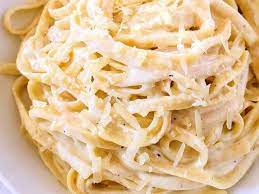

ALFREDO

Description
a rich pasta sauce made with butter, Parmesan cheese, and often cream compare fettuccine alfredo
Ingredients
- 1/2 Cup Butter
- 1.5 Cups Heavy Whipping Cream
- 2 Teaspoon Garlic minced
- 1/2 Teaspoon Italian Seasoning
- 1/2 Teaspoon Salt
- 1/4 Teaspoon Pepper
- 2 Cups Fresh Grated Parmesan
Steps
- Add the butter and cream to a large skillet.
- Simmer over ow heat for 2 minutes.
- Whisk in the garlic, Italian seasoning, salt, and pepper for one minute
- Whisk in the parmesan cheeese until melted
- Serve